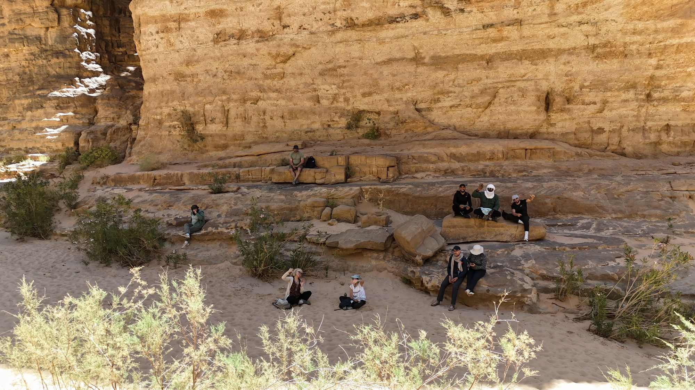

4x4 raid, 17 days
The great crossing: from the Tunisian border to the Tassili through the Grand Erg Oriental, the Red Tadrart and Ihrir, then home on the Algiers-Valencia ferry.
The itinerary
- Day 1
Taleb Larbi, El Oued
Welcome at the Taleb Larbi border, formalities and night at the Gazelle d'Or hotel (El Oued).
- Day 2
The Grand Erg Oriental
South by 4x4 across the Grand Erg Oriental to Hassi Bel Guebbour for the first camp under the stars.
- Day 3
Illizi
From Hassi Bel Guebbour to Illizi, gateway to the Tassili n'Ajjer, and night in camp.
- Day 4
Essendilène
To the Essendilène canyon and its guelta lined with oleanders, then night in camp.
- Day 5
Djanet
From Essendilène to Djanet to restock, night in a hotel or camp.
- Day 6
Ali Dama
Into the Red Tadrart towards Ali Dama and night in camp.
- Day 7
El Birdj
From Ali Dama to the grand site of El Birdj for the night in camp.
- Day 8
Moul Enaga
Through sculpted landscapes to Moul Enaga and night in camp at the foot of the cliffs.
- Day 9
Tin Merzouga
To Tin Merzouga, the highest dune in Algeria, for a spectacular sunset and a night in camp.
- Day 10
Adjelati
From Tin Merzouga to Adjelati through canyons and red dunes, then night in camp.
- Day 11
Engravings, back to Djanet
Back to Djanet past the region's rock engravings, night in a hotel or camp.
- Day 12
Ihrir
To the hanging oasis of Ihrir, its pools and traditional villages, night in camp.
- Day 13
Oued Aharhar
From Ihrir to the Aharhar wadi for a last Saharan evening and night in camp.
- Day 14
In Amenas
North to In Amenas and night at the Ayanis hotel.
- Day 15
Hassi Messaoud
From In Amenas to Hassi Messaoud and night at the Anis Résidence hotel.
- Day 16
Djelfa
Across the High Plateaus to Djelfa and night at the Asslouni hotel.
- Day 17
Algiers and the ferry
Drive to the port of Algiers (arrival planned at 1 pm) to board the Balearia ferry at 5 pm, bound for Valencia.
This itinerary can be adapted to your port of arrival.


Travel info
Visa, flights, seasonFAQ
All questionsDestinations
Discover the placesMore tours
All tours
Ihrir tour, 6 days
The Ihrir oasis, the Issendilène canyon and its guelta, Djanet market and a meeting with Tuareg women.
107,000 DA per personView the tourIhrir tour, 7 days
The Ihrir tour with an extra day for Adayk, the famous Weeping Cow engraving and the Elephant rock.
118,000 DA per personView the tourRed Tadrart tour, 6 days
El Birdj, Moul Enaga and Tin Merzouga, the highest dune in Algeria. Algiers-Djanet flights and visa included.
210,000 DA per personView the tourYour journey to Djanet starts with a message
Tell us your dates and wishes. Mina replies personally within 24 hours.